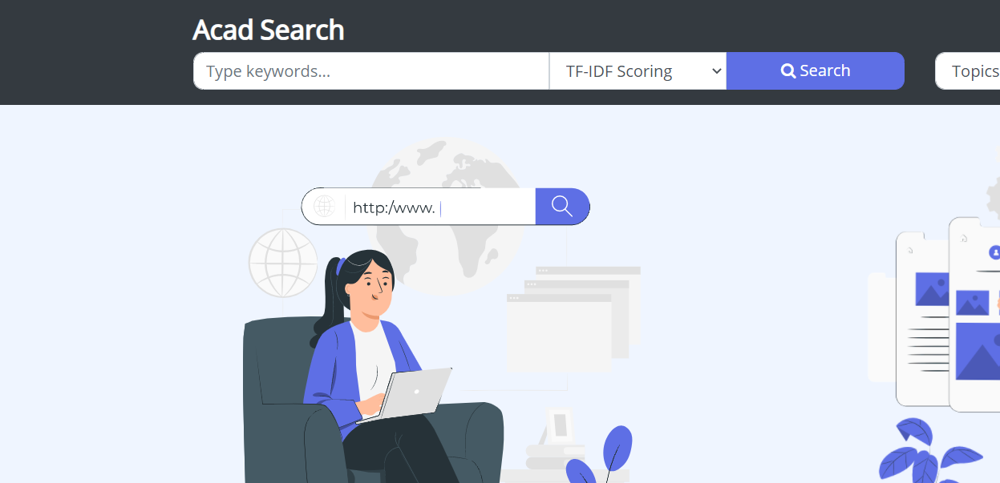
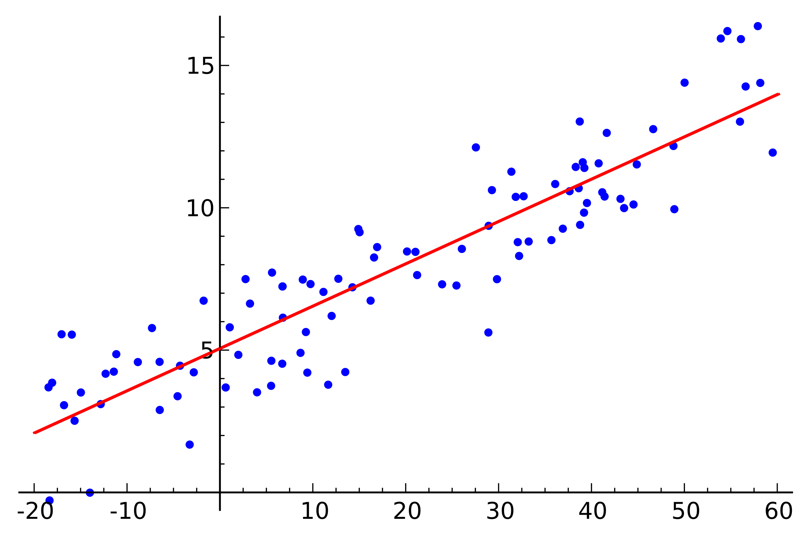

-
Built a Movie Recommender System with
Analytics, Dynamic Aggregation, and Recommendation.
Scala, Apache Spark
-
Investigated the relation between the position of a link on a Wikipedia page
and its clickthrough rate.
Pandas, networkx, Web-Scraping
-
Designed and built a Linux-like, searchable Filesystem hosted entirely on the RAM in C.
C, Tree DS, KMP Algo
-
Visualisations for the NBA
Designed an interactive website to display various interesting NBA-related stats.
HTML, CSS, Javascript, d3js
-
Implemented various features of a typechecker for the Simply Typed Lambda Calculus.
Scala, Functional Programming
-
Online Classroom Platform
Interface with client and server-side functionalities such as logging in, posting, live-chat and so on.
C++, Wireshark, TCP/IP
-

Search Engine Academia
Created a search engine to filter and rank academics according to specified criteria.
Python, TF-IDF, Web-Scraping
-
Came up with a novel solution to solve the greedy spiders problem on paths.
Python, Theoretical CS
-
Quantum Portfolio Optimisation
Adapted the Markowitz portfolio optimisation to the DWave quantum computer.
Python, DWave Quantum Computer
-

Quantum Linear Regression
Published a paper with a quantum algorithm for linear regression for a large feature set.
Python, scikit-learn, DWave QC
-
Created a hospital database system with the essential roles, their dependencies and functionalities.
MySQL, Python, ER Diagrams
-
Programmed a compiler for a C-like language with support up to arrays and functions (even recursive).
Flex, Bison
 Wikipedia TrendsInvestigated the relation between the position of a link on a Wikipedia page and its clickthrough rate.Pandas, networkx, Web-Scraping
Wikipedia TrendsInvestigated the relation between the position of a link on a Wikipedia page and its clickthrough rate.Pandas, networkx, Web-Scraping